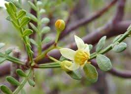

Burseraceae
Frankincense and Myrrh Family / Torchwood Family
Burseraceae is a pantropical family of about 18-20 genera and 700-850 species, consisting primarily of resinous trees and shrubs. They are famously known as the source of aromatic resins like frankincense (Boswellia) and myrrh (Commiphora). Key features include usually alternate, pinnately compound leaves without stipules, small and often unisexual flowers, a superior ovary, and typically a drupe fruit that often splits open to reveal pyrenes covered by a colorful pseudo-aril. The family belongs to the order Sapindales and is closely related to Anacardiaceae (cashew family).
Overview
The Burseraceae family is defined by its production of fragrant oleoresins – mixtures of essential oils and resins – which exude from canals in the bark when cut. These resins, including historically significant frankincense (Boswellia) and myrrh (Commiphora), as well as copal and elemi from other genera, have been used for millennia as incense, perfumes, varnishes, and traditional medicines. The family primarily comprises trees and shrubs adapted to tropical climates worldwide, with particular diversity in tropical dry forests and savannas of Africa, Madagascar, the Americas, and Asia.
Members typically have alternate, pinnately compound leaves (though variations exist) that lack stipules and are often aromatic when crushed. Flowers are generally small, greenish or whitish, often unisexual, and borne in branched clusters. The fruit is a drupe (stone fruit), but uniquely, the outer layer often splits open (dehisces) at maturity, revealing one or more stones (pyrenes) frequently enveloped by a brightly colored, fleshy or waxy structure called a pseudo-aril, which attracts animal dispersers.
Burseraceae belongs to the order Sapindales, where its closest relative is the Anacardiaceae (cashew family), with which it shares the resinous habit and compound leaves, sometimes leading to identification challenges.
Quick Facts
- Scientific Name: Burseraceae
- Common Name: Frankincense and Myrrh Family, Torchwood Family
- Number of Genera: Approximately 18-20
- Number of Species: Approximately 700-850
- Distribution: Pantropical.
- Evolutionary Group: Eudicots - Rosids - Malvids - Sapindales
- Key Feature: Production of aromatic resins (e.g., frankincense, myrrh).
Key Characteristics
Growth Form and Habit
Primarily trees or shrubs, characteristically resinous. Specialized canals or ducts in the bark produce aromatic oleoresins (gums, balms, resins) that exude upon injury. Bark is often smooth and sometimes peels in thin layers (e.g., Bursera). Many species are deciduous during dry seasons.
Leaves
Leaves are usually arranged alternately (rarely opposite) and are typically pinnately compound (imparipinnate or paripinnate). Trifoliolate and unifoliolate leaves also occur, the latter appearing simple but recognizable by a joint at the base of the blade. Leaflets usually have entire margins. Stipules are typically absent. Leaves are often aromatic when crushed due to resins.
Flowers and Inflorescence
Flowers are borne in axillary or terminal panicles, racemes, or other cymose clusters. They are typically small, inconspicuous (greenish, whitish, yellowish), radially symmetrical (actinomorphic), and usually unisexual (plants being dioecious, monoecious, or polygamodioecious). Flowers are generally 3- to 5-merous.
- Calyx: 3-5(-6) sepals, fused at the base into a cup with short lobes, usually persistent.
- Petals: 3-5(-6), usually separate or only slightly fused at the base, small.
- Stamens: Usually in two whorls, numbering twice the petals (e.g., 6, 8, 10) or sometimes equal to the petals. Filaments are distinct and typically inserted on or around a prominent nectar disk. Staminodes (sterile stamens) are common in female flowers.
- Ovary: Superior, composed of 2-5 fused carpels forming 2-5 locules. Each locule typically contains 2 (sometimes 1) ovules attached via axile placentation. A conspicuous nectar disk surrounds the ovary base (intrastaminal or extrastaminal). A single style tops the ovary with a capitate or lobed stigma. A pistillode (rudimentary ovary) is often present in male flowers.
Fruits and Seeds
The fruit is a drupe, containing 1 to 5 hard stones (pyrenes). A characteristic feature is that the outer fleshy or leathery layer (exocarp/mesocarp) often dehisces or splits open irregularly or by valves at maturity. This exposes the pyrene(s), which are frequently covered by a brightly colored (red, orange, yellow), fleshy or waxy pseudo-aril (an outgrowth associated with the pyrene, not the seed itself).
Each pyrene contains a single seed. Seeds lack significant endosperm, and the embryo often has folded or twisted (contorted) cotyledons.
Chemical Characteristics
The family is defined by its rich production of oleoresins in specialized secretory canals. These complex mixtures contain volatile terpenoids (essential oils responsible for fragrance) and non-volatile resins (phenolic compounds, other terpenoids). These compounds are responsible for the characteristic scents of frankincense, myrrh, copal, elemi, and other resins derived from the family.
Field Identification
Identifying Burseraceae often relies on recognizing the resinous nature, leaf characteristics, and distinctive fruit structure:
Primary Identification Features
- Habit & Exudate: Resinous trees or shrubs – look for aromatic resin/gum/latex exuding from cuts in the bark.
- Leaves: Usually alternate and pinnately compound, typically lacking stipules. Often aromatic when crushed.
- Flowers: Small, inconspicuous (greenish/whitish), usually unisexual, 3-5 merous, with a prominent nectar disk. Petals present but small.
- Fruit: A drupe where the outer layer often splits open (dehisces) to reveal 1-5 hard pyrenes (stones).
- Pseudo-aril: Pyrenes are frequently covered by a conspicuous, often brightly colored, fleshy or waxy pseudo-aril.
Secondary Identification Features
- Bark: Often smooth, sometimes peeling in thin sheets (Bursera).
- Inflorescence: Branched panicles or clusters.
- Ovary: Superior, 2-5 locules.
- Distribution: Pantropical, common in dry forests and savannas.
Seasonal Identification Tips
- Year-round: The tree/shrub habit and resinous bark (check by slightly scratching) are constant features. Leaf arrangement (alternate, compound) visible during growing season (note deciduous species).
- Flowering Season: Look for panicles of small, often unisexual flowers.
- Fruiting Season: The most distinctive feature is the fruit – look for drupes that are splitting or have split to reveal the pyrenes, often covered by a colorful pseudo-aril. This is key for confirmation.
Common Confusion Points
- Anacardiaceae (Cashew Family): Very closely related and vegetatively similar (resinous trees/shrubs with alternate compound leaves). Anacardiaceae often differ in having resin canals visible in cut petioles, usually only 1 ovule per locule, and typically indehiscent drupes lacking a prominent pseudo-aril (though fleshy parts can be present). Distinguishing requires careful attention to floral details and fruit structure.
- Sapindaceae: Often woody with alternate compound leaves, but generally lack the prominent aromatic resins of Burseraceae, often have stipules (though sometimes absent), flowers can be zygomorphic, and fruits are diverse but typically not dehiscent drupes with pseudo-arils (more often capsules, samaras, schizocarps, berries).
- Meliaceae (Mahogany Family): Woody plants with alternate compound leaves, but usually non-resinous, typically have stamens fused into a tube, and different fruit types (often capsules or non-dehiscent drupes).
Checking for aromatic resins in the bark, alternate compound leaves without stipules, small unisexual flowers, and especially the dehiscent drupe exposing pyrenes often covered by a pseudo-aril is crucial for identifying Burseraceae.
Field Guide Quick Reference
Look For:
- Resinous tree or shrub (aromatic exudate)
- Leaves usually alternate, pinnately compound
- No stipules
- Flowers small, inconspicuous, usually unisexual
- Prominent nectar disk
- Superior ovary (2-5 locules)
- Fruit a drupe, often dehiscent
- Pyrenes often covered by colorful pseudo-aril
Key Variations:
- Bark peeling vs. smooth
- Number of leaflets
- Flower parts 3- vs. 4- vs. 5-merous
- Stamen number (1x or 2x petals)
- Fruit size, shape, dehiscence
- Pseudo-aril presence, color, form
Notable Examples
The family is famed for its aromatic resins and includes ecologically important tropical trees.

Boswellia sacra (& related spp.)
Frankincense
Small trees native to arid regions of the Arabian Peninsula and Northeast Africa. The aromatic oleoresin harvested from incisions in the bark is true frankincense, used for millennia as incense and in traditional medicine. Plants have pinnately compound leaves and produce small whitish flowers followed by small dehiscent drupes.

Commiphora myrrha (& related spp.)
Myrrh
Shrubs or small trees native to Northeast Africa and the Arabian Peninsula, often thorny. The oleo-gum-resin collected from the bark is myrrh, another historically important aromatic substance used for incense, perfume, and medicine. Leaves often trifoliolate or unifoliolate.

Bursera simaruba
Gumbo Limbo, Tourist Tree
A fast-growing tree native to tropical America (Florida, Mexico, Caribbean, Central to N South America). Recognizable by its smooth, reddish, peeling bark (likened to sunburnt tourist skin). Produces resin, has pinnately compound leaves, small flowers, and dehiscent drupes with a red pseudo-aril.

Canarium ovatum
Pili Nut
A large tree native to the Philippines and widely cultivated in Southeast Asia. While the family is known for resins, this species is primarily valued for its edible nuts (the seeds within the hard pyrene of the drupe fruit). It exemplifies the genus Canarium, which also includes species yielding elemi resin.
Phylogeny and Classification
Burseraceae belongs to the large order Sapindales, situated within the Malvid clade of Rosid eudicots. Molecular phylogenetic studies consistently show a very close relationship between Burseraceae and Anacardiaceae (the cashew or sumac family). These two families form a well-supported sister group, sharing features like resin production and often compound leaves, though differing in key floral and fruit details.
Within Sapindales, the Burseraceae-Anacardiaceae clade is part of the core group that also includes Sapindaceae (maple/soapberry family), Rutaceae (citrus family), Meliaceae (mahogany family), and Simaroubaceae. Understanding the relationships among these families helps reconstruct the evolution of traits like chemical defenses (resins, oils), fruit types, and habit within this major angiosperm order.
Position in Plant Phylogeny
- Kingdom: Plantae
- Clade: Angiosperms (Flowering plants)
- Clade: Eudicots
- Clade: Rosids
- Clade: Malvids
- Order: Sapindales
- Family: Burseraceae
Evolutionary Significance
Burseraceae is significant in evolutionary studies for:
- Chemical Ecology: Represents a major radiation characterized by the production of complex oleoresins, playing roles in defense against herbivores and pathogens, and influencing plant-animal interactions.
- Sister Group Relationship: The close relationship with Anacardiaceae provides a model system for studying divergence in reproductive traits (ovule number, fruit dehiscence, aril vs. other fruit structures) between closely related, large tropical families.
- Tropical Diversification: Contributes significantly to the diversity of trees and shrubs in tropical ecosystems worldwide, particularly in seasonally dry forests.
- Ethnobotany and History: The long history of human use of frankincense, myrrh, and other resins links plant evolution with cultural history, trade routes, and traditional practices.
- Phylogeny of Sapindales: Helps resolve the evolutionary history of the Sapindales order, a major component of global plant diversity.